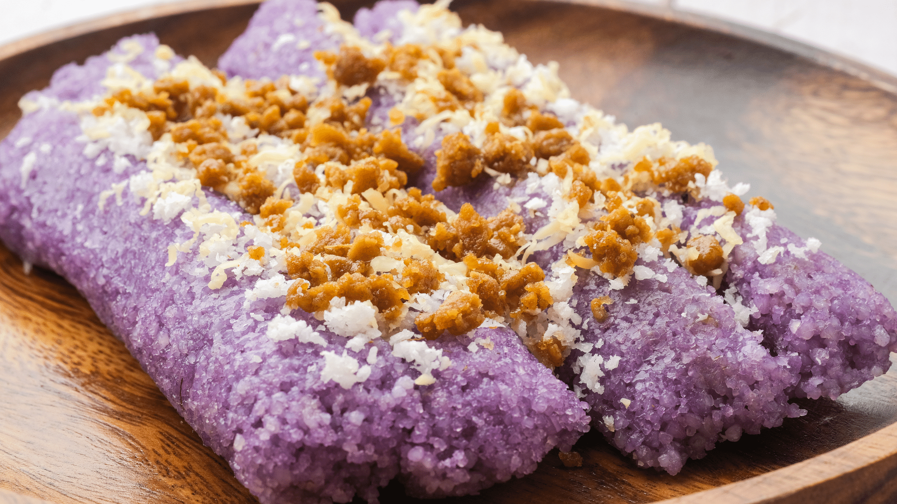

Puto Bumbong Recipe

Video Tutorial: Puto Bumbong Recipe Video
Puto Bumbong is a traditional Filipino delicacy often enjoyed during the Christmas season. Here's how to make it:
Ingredients:
- 2 cups glutinous rice (malagkit)
- 1 cup purple glutinous rice (pirurutong)
- 2 cups water, for soaking
- Banana leaves, for wrapping
- Butter or margarine, for brushing
- Grated coconut
- Muscovado sugar
Instructions:
- Combine glutinous rice and purple glutinous rice in a bowl. Rinse several times until the water runs clear. Drain.
- Soak the rice in water for at least 4 hours or overnight.
- Grind the soaked rice using a grinder or food processor until it forms a smooth batter. Add a little water if needed to achieve a thick but pourable consistency.
- Place a small amount of the rice batter in the center of a banana leaf. Roll the leaf into a cylinder, about 1 inch in diameter, and secure the ends by folding or tying with string.
- Repeat the process with the remaining rice batter and banana leaves.
- Steam the wrapped rice cylinders in a steamer for about 20-30 minutes, or until cooked through.
- Once cooked, remove the puto bumbong from the steamer and unwrap from the banana leaves.
- Brush each puto bumbong with butter or margarine while still hot.
- Serve with grated coconut and muscovado sugar on the side.
- Enjoy your delicious Puto Bumbong!